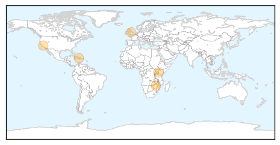
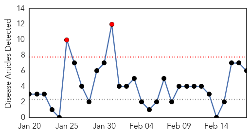
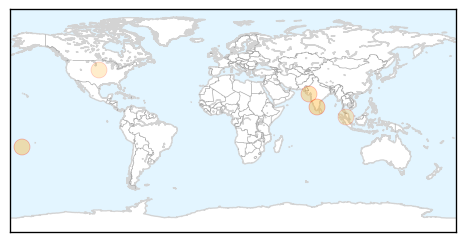

Cholera
30-Day Web Trend
0 alerts, 0 warnings

30-Day Twitter Trend
4 alerts, 0 warnings

Article Locations
Article Confidences

Top Articles:
- 0.991
- Comment: Heed council's cholera warnings
- 0.988
- Kenya : For cholera, prevention always better than cure
- 0.946
- Haiti cholera victims file new lawsuit against UN -The Tico Times
- 0.943
- Researchers scour Italian cemetery for DNA of ancient strains of cholera
- 0.775
- GHS alerts possible cholera outbreak in Brong-Ahafo
Top Tweets:
-
No tweets found for Feb 18, 2015
Dengue Fever
30-Day Web Trend
2 alerts, 0 warnings

30-Day Twitter Trend
6 alerts, 0 warnings

Article Locations
Article Confidences

Top Articles:
Top Tweets:
- 0.528
- Flavivirus news: Dengue outbreak rises to 32 cases - Newsport Daily: Newsport DailyDengue outbr... http://t.co/5IIqZIAqlY pathogenposse